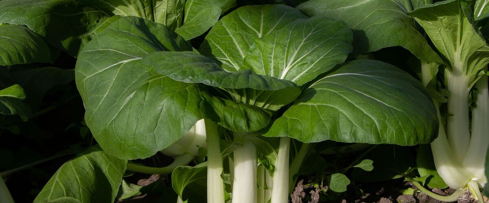
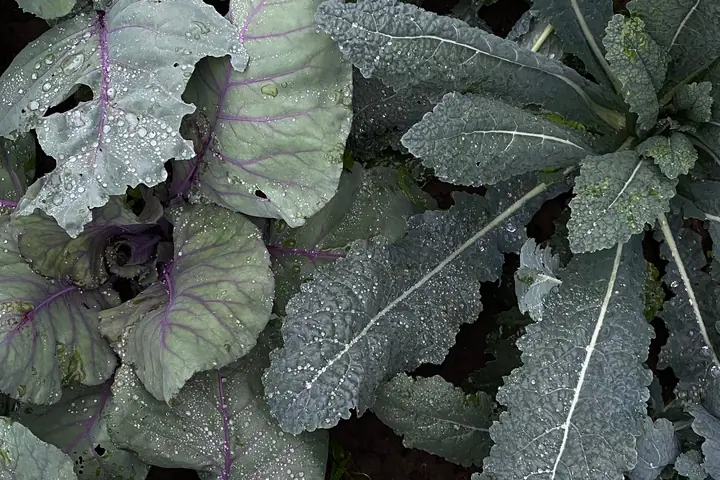
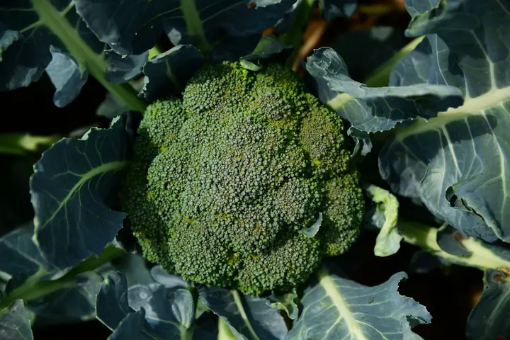
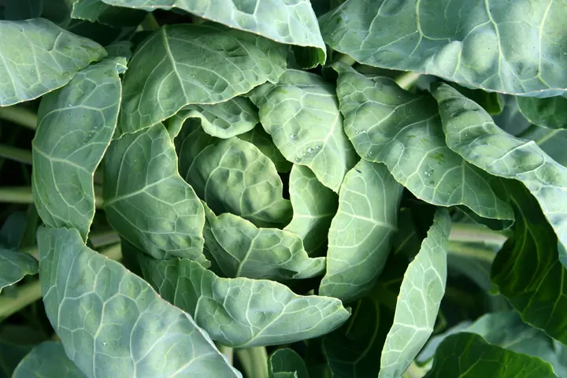
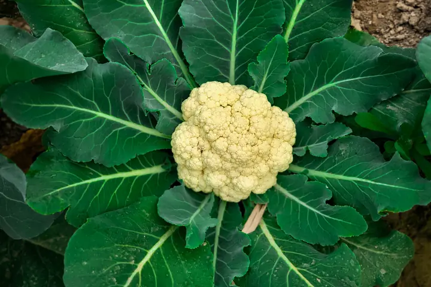
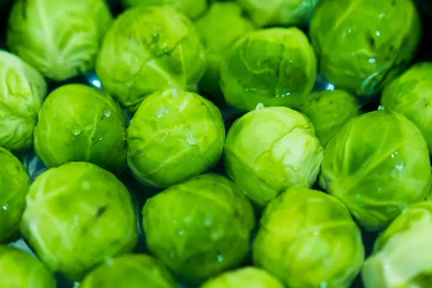
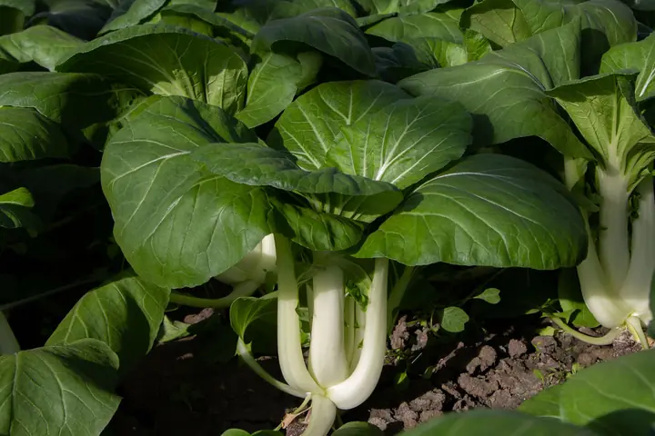
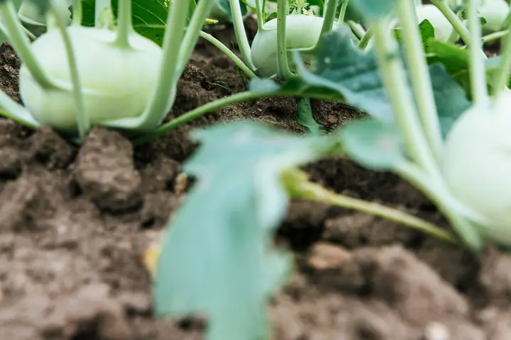
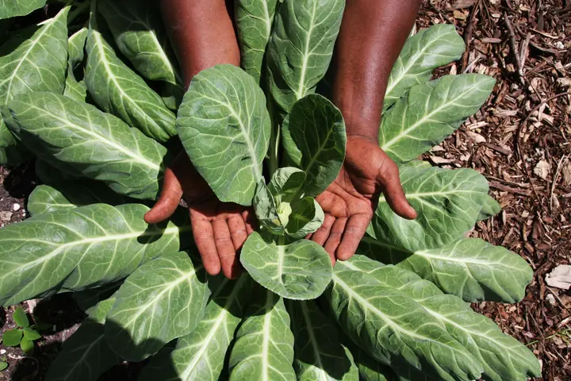
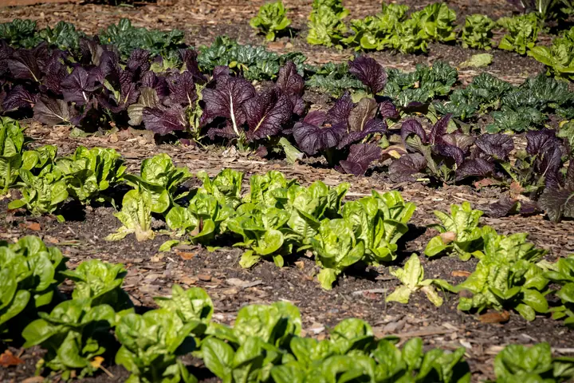

When to plant · 9 plants
Cabbage family
Kale, broccoli and their cousins. Many get sweeter after frost. Pick one for its dates in your town and how to grow it.
- KaleEasy
- BroccoliModerate
- CabbageModerate
- CauliflowerTricky here
- Brussels sproutsModerate
- Bok choyEasy
- KohlrabiEasy
- CollardsEasy
- Mustard greensEasy


Planting order
When each one first goes in around Portland, starting indoors where that comes first. Colder towns run later.
- Late winter
- Kale, Broccoli, Cabbage, Cauliflower, Brussels sprouts, Bok choy, Kohlrabi, Collards
- Early spring
- Mustard greens
Planting windows at a glance
Main planting window in five reference towns. Each plant's page has every town.
| Plant | Portland | Seattle and Tacoma | Bend and Redmond | Spokane | Boise and Meridian |
|---|---|---|---|---|---|
| Kale | Mar 15 – Apr 26 | Mar 15 – Apr 26 | May 12 – Jun 23 | Apr 15 – May 27 | Apr 1 – May 13 |
| Broccoli | Mar 15 – Apr 19 | Mar 15 – Apr 19 | May 12 – Jun 16 | Apr 15 – May 20 | Apr 1 – May 6 |
| Cabbage | Mar 15 – Apr 19 | Mar 15 – Apr 19 | May 12 – Jun 16 | Apr 15 – May 20 | Apr 1 – May 6 |
| Cauliflower | Mar 15 – Apr 12 | Mar 15 – Apr 12 | May 12 – Jun 9 | Apr 15 – May 13 | Apr 1–29 |
| Brussels sprouts | Mar 15 – Apr 26 | Mar 15 – Apr 26 | May 12 – Jun 23 | Apr 15 – May 27 | Apr 1 – May 13 |
| Bok choy | Mar 1 – Apr 5 | Mar 1 – Apr 5 | Apr 28 – Jun 2 | Apr 1 – May 6 | Mar 20 – Apr 24 |
| Kohlrabi | Mar 15 – Apr 26 | Mar 15 – Apr 26 | May 12 – Jun 23 | Apr 15 – May 27 | Apr 1 – May 13 |
| Collards | Mar 15 – Apr 26 | Mar 15 – Apr 26 | May 12 – Jun 23 | Apr 15 – May 27 | Apr 1 – May 13 |
| Mustard greens | Mar 1 – Apr 12 | Mar 1 – Apr 12 | Apr 28 – Jun 9 | Apr 1 – May 13 | Mar 20 – May 1 |
Growing cabbage family in the Northwest
Kale, broccoli, cabbage and their relatives are the backbone of a Northwest vegetable garden. They like cool weather, tolerate frost, and several of them taste sweeter after a cold snap, which makes them ideal for the region's long, mild fall.
Most gardeners plant them twice. Spring plantings go out as young plants a few weeks before the last frost; fall and winter plantings are set out in mid to late summer so they size up before the days get short. A plant that isn't close to full size by mid-October will mostly sit still until spring, so the summer planting date matters more than it seems.
Cabbage worms (the green caterpillars of the white butterflies you see in summer) and aphids are the usual trouble. A lightweight row cover laid over the plants at planting keeps the butterflies off entirely. Kale is the easiest to start with: it's the most cold-hardy of the group and you pick leaves for months rather than waiting for a single head.
Soil and feeding
The cabbage family are hungry plants. Work in compost before planting, and give heavy feeders like broccoli, cabbage and cauliflower a little extra nitrogen as they grow. Most Northwest soils west of the Cascades are acidic, and these crops do better when a soil test shows the pH has been brought close to neutral with lime.
Pests to plan for
Cabbage worms (the green caterpillars of the white butterflies), aphids and root maggots are the common trouble. A light row cover put on at planting keeps the butterflies and the root maggot flies from laying eggs, and it can stay on for crops that don't need bees. Moving the family to a different bed each year helps keep clubroot and other soil problems from building up.
Timing for fall
These crops are at their best maturing in cool weather, which makes them ideal for a fall and winter garden. Starting fall plants in mid-summer is the step most people miss: the dates on each plant page show when to start them for your town. West of the Cascades, kale, collards and Brussels sprouts often keep going through winter.
Side by side
How easy each one is, the sun it needs and how far apart to plant. Tap one for its dates and growing guide.

KaleEasy Full sun to part shade 18 inches apart
BroccoliModerate Full sun 18 inches apart
CabbageModerate Full sun 18 inches apart
CauliflowerTricky here Full sun 18 to 24 inches apart
Brussels sproutsModerate Full sun 24 inches apart
Bok choyEasy Full sun to part shade 6 to 10 inches apart
KohlrabiEasy Full sun Thin to 6 inches apart
CollardsEasy Full sun to part shade 18 to 24 inches apart
Mustard greensEasy Full sun to part shade Thin to 6 to 12 inches apart
Common questions
When should I plant broccoli and cabbage in the Northwest?
Set out young plants in early spring, a few weeks before your last frost, and again in midsummer for fall harvests. The fall crop is often the better one west of the Cascades, because cool weather suits these plants.
How do I keep cabbage worms off my kale?
Cover plants with row cover or fine insect netting from the day you plant, so the white cabbage moths can't lay eggs. Pick off the green caterpillars you find, and check under the leaves weekly.
Does frost hurt kale?
No. Kale, collards and Brussels sprouts handle hard frost, and the cold turns their starches to sugars, so leaves picked after a frost taste sweeter.
Other plant types
- Salad greens
- Root vegetables
- Onion family
- Peas and beans
- Tomatoes and summer crops
- Squash, cucumbers and melons
- Herbs
- Berries
- Perennial vegetables
- Fruit and nut trees
- Native plants
- Flowers